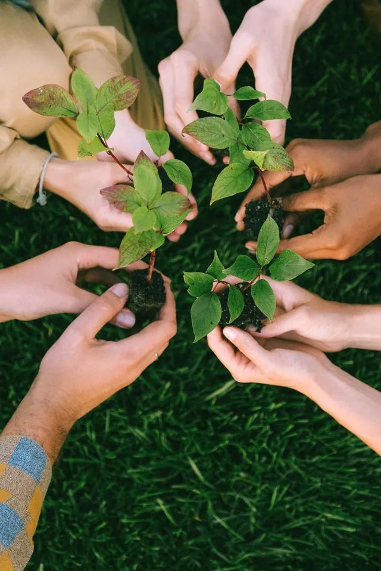

12 participantsPlant trees on Station Road
Northgate · one Saturday morning (3 hours) · 12 of 20 spots filledHelp line the new Station Road with lime and rowan trees as part of the mobility redesign. We’ll dig, plant and stake together, then mark each tree with the name of the street it belongs to.
What you’ll need: sturdy boots and a willingness to get muddy. Spades, gloves and saplings are provided.